PR 3: caregiver Verify Visit (R8) and bottom tabs (R20)
Local harness, synthetic data, 390 px. Before = the first image. Not deployed.
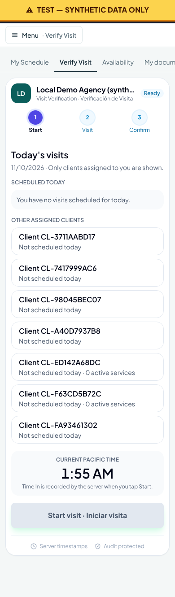
BEFORE: all assigned clients listed, Start disabled
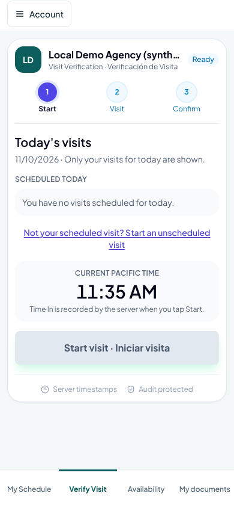
01-seeded-no-visit-today-scrolled: Seeded: no visit today. Only the labelled unscheduled link remains (before: 7 "Other assigned clients" cards) (scrolled to the bottom)
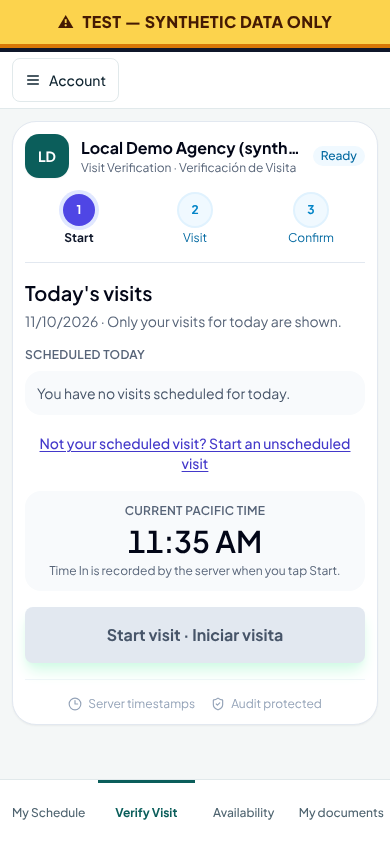
01-seeded-no-visit-today: Seeded: no visit today. Only the labelled unscheduled link remains (before: 7 "Other assigned clients" cards)
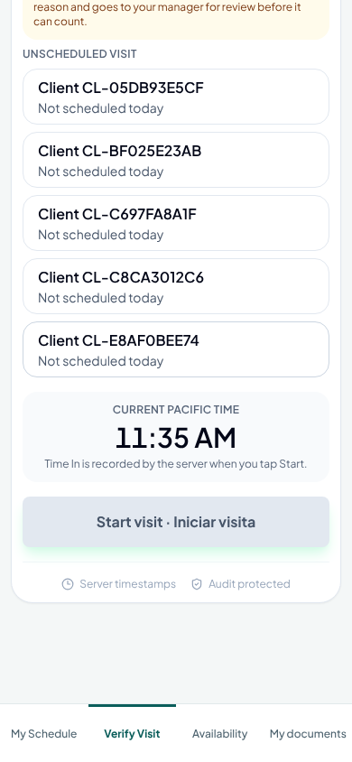
02-unscheduled-path-open-scrolled: Unscheduled path opened: marked Provisional (scrolled to the bottom)
03-unscheduled-selected-reason-scrolled: An unscheduled client chosen: reason required (scrolled to the bottom)03-unscheduled-selected-reason: An unscheduled client chosen: reason required
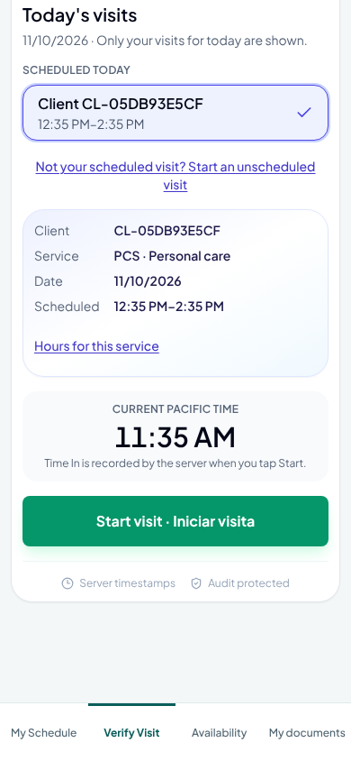
04-one-scheduled-visit-scrolled: One visit today: selected for you, big Start ready (scrolled to the bottom)
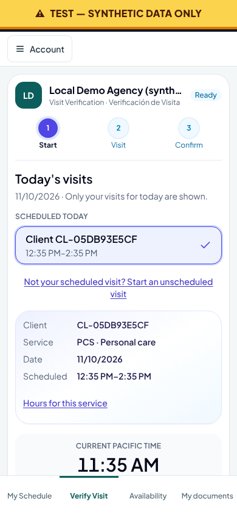
04-one-scheduled-visit: One visit today: selected for you, big Start ready
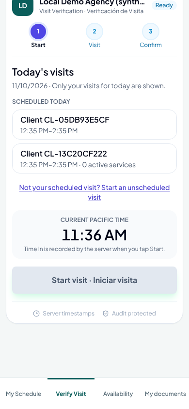
05-two-scheduled-visits-scrolled: Two visits today: pick one, then Start (scrolled to the bottom)
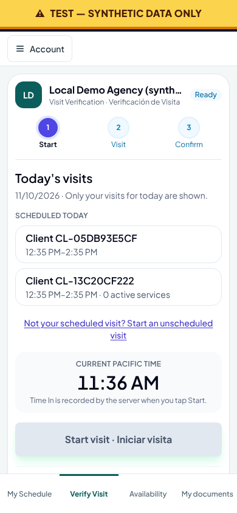
05-two-scheduled-visits: Two visits today: pick one, then Start
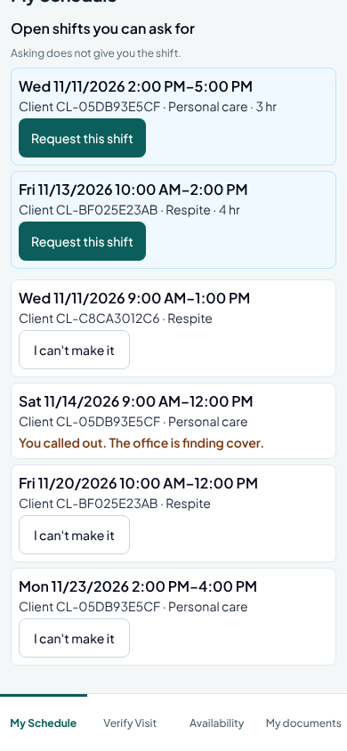
06-my-schedule-scrolled: My Schedule with the four bottom tabs (scrolled to the bottom)
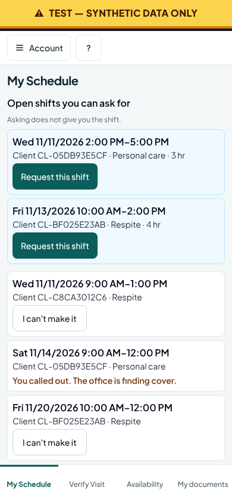
06-my-schedule: My Schedule with the four bottom tabs07-availability-scrolled: Availability (scrolled to the bottom)
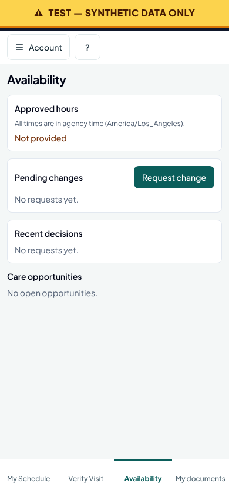
07-availability: Availability08-documents-scrolled: My documents (scrolled to the bottom)